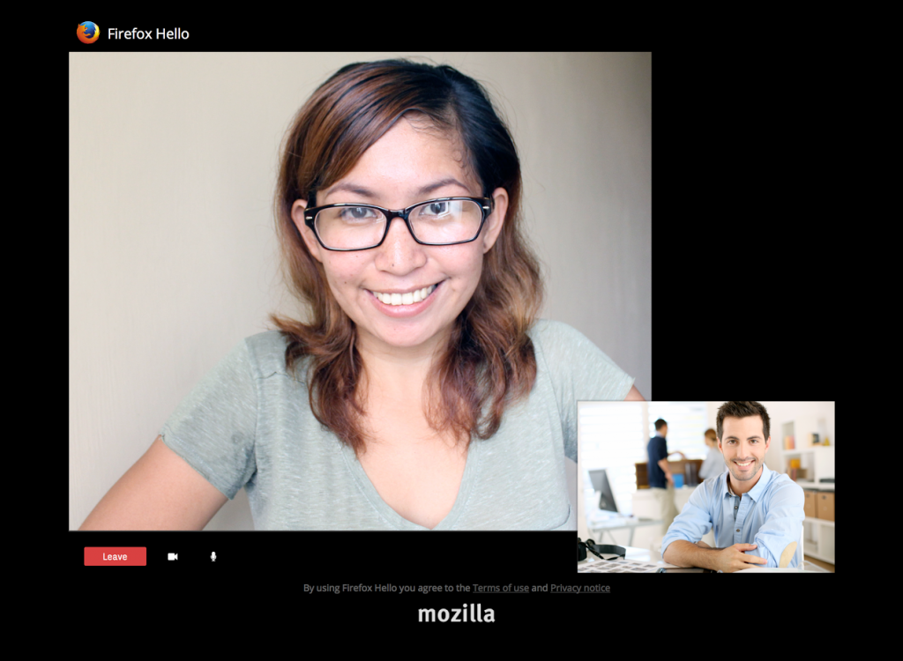

我們為 Firefox 的「Hello」通訊功能提供多項更新，並期待你能加入測試並踴躍提供意見。即使你的親友使用不同軟＼硬體或視訊電話服務，仍能透過 Hello 輕鬆相互溝通。
透過長期合作夥伴 Telefónica 並搭配 TokBox 技術，Mozilla 搶先於瀏覽器中直接建構全球的通訊系統，並於 Web 上輕鬆通話。所有人都能免費使用 Firefox Hello，且只要選用如 Firefox、Chrome、Opera 等已支援 WebRTC 的瀏覽器，不須額外申請帳號都能順利聯絡。
從發表「Hello」功能以來，Mozilla 就一直在聽取使用者的意見並採取行動。使用者曾說不想再建立帳戶或不想下載外掛程式，就要能使用 Hello。另有訴求是希望能簡化電話的撥打以及管理程序。因此我們對 Firefox 測試版 (Beta) 做出「無帳戶撥打模式」的重大變更，得以縮減某些步驟而進一步簡化電話撥打程序。現在只要你啟動對話，就會開啟視窗並顯示自己鏡頭拍攝的畫面，直到你所邀請的通話者點擊了連結並加入對話為止。而當受邀人加入對話之後，Hello 也會發出聲音通知你，且 Hello 的圖示將轉為藍色。
每個對話視窗都提供專屬且可分享的網址，讓兩個人能更輕鬆的以聲音或視訊方式溝通。也能另外建立多個對話視窗並分別命名，不需每次都要再建立新的連結，才能找到常聊天的對象開始對話。舉例來說，你可建立固定每週與家人聯繫用的對話，或針對公事建立另外對話以進行每日會議。最棒的是，你完全不用設定帳戶就能享受這些功能，且系統將儲存所有對話供你日後使用。

Firefox Hello 中的新對話視窗
喜歡直接撥打電話的使用者也能繼續享受既有功能。只要雙方都擁有 Firefox Accounts，就能直接撥打電話給對方。
所以請你立刻開始對話，且在結束通話之後讓我們知道你的感想吧！任何意見都能協助 Mozilla 找到問題並修復之，以利更多 Firefox 使用者享受更完整的服務。參閱說明以建立 Hello 上的對話。
更多資訊：
- 下載 Windows 、 Mac 、 Linux 版的 Firefox 測試版 (Beta)
- Windows 、 Mac 、 Linux 版的 Firefox Beta 版本說明
- Firefox for Android 測試版 版本說明
原文連結：Calling All Beta Users: Help Test Simplified Calling in Firefox Hello